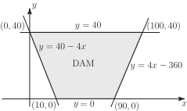
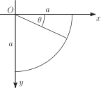

Section 27.1 considered the force on a rectangular dam of width 100 m and height 40 m. Instead, imagine that the dam is not rectangular in profile but instead has a width of 100 m at the top but only 80 m at the bottom. The top and bottom of the dam can be given by line segments
(bottom) and
while the sides are parts of the lines
i.e.
(left) and
i.e.
(right). (See Figure 20).
Figure 20

Thus the dam exists at heights
between 0 and 40 while for each value of
, the horizontal coordinate
varies between
and
. Thus the surface integral representing the total force i.e.
becomes the double integral
which can be evaluated as follows
i.e. the total force is just under 700 meganewtons.
A plane area in the shape of a quadrant of a circle of radius
is immersed vertically in a fluid with one bounding radius in the surface. Find the position of the centre of pressure.
Figure 21

Note: In subsection 6 of Section 27.1 it was shown that the coordinates of the centre of pressure of a (thin) object are
Then
and
.
The centre of pressure is at
.